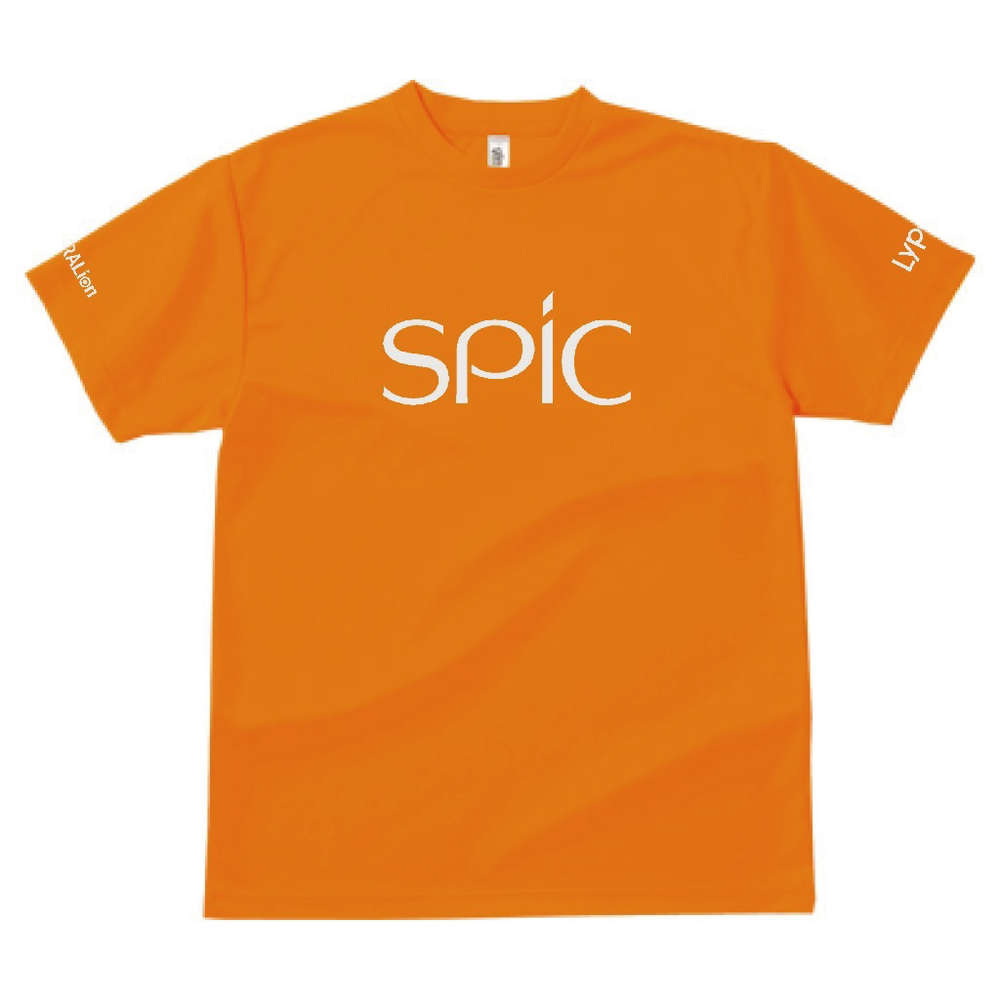
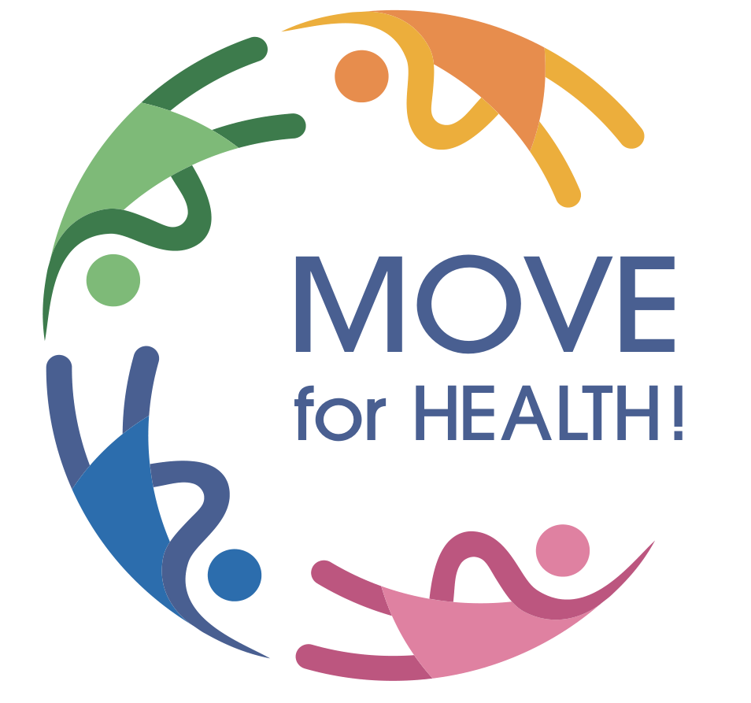
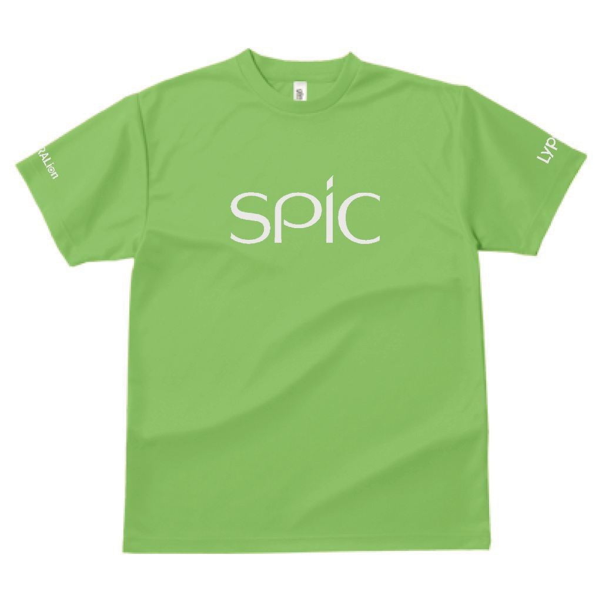
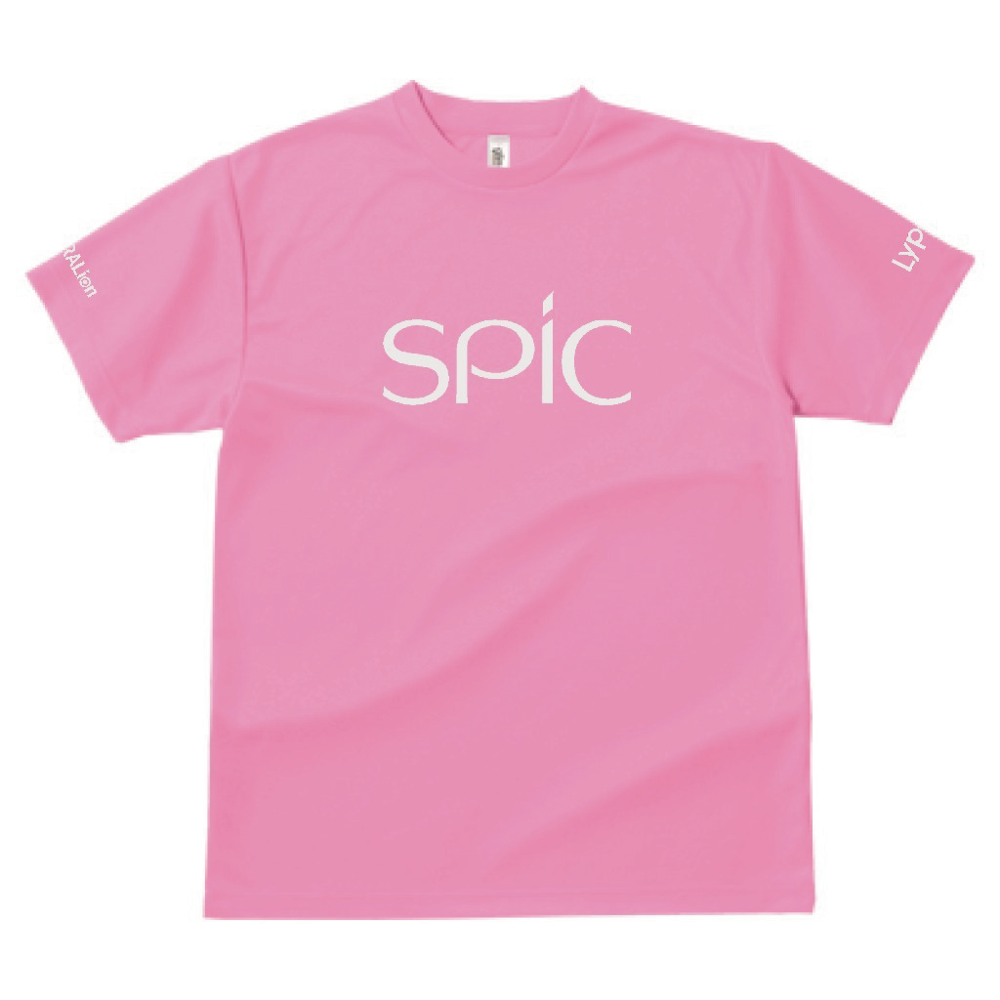
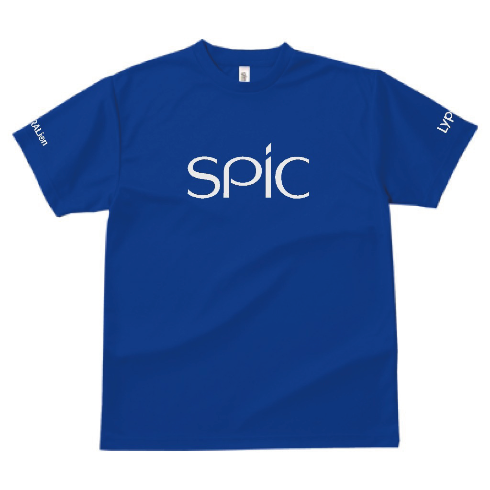
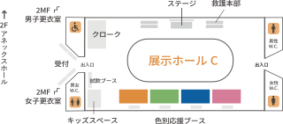

ORANGETEAM
チーム名
オレンジ・スマイル
スローガン
笑顔で挑戦、笑顔で応援。

SPIC SPORTS DAY 2026
～MOVE for HEALTH！～
開催まであと-日

ABOUT
動けば、つながる。
WE MAKE a WELLNESS EXPERIENCE.
11月3日は「文化の日」。
体を動かすこと、健やかでいることを、日々の「文化」に。
この一日が、皆さまの健やかな毎日につながるきっかけとなれば幸いです。
名称
スピック大運動会2026 ～MOVE for HEALTH！～
日時
2026年11月3日(火・祝)
受付 9:00 ／ 開会式 10:00 ／ 運動会終了 14:30（予定）
会場
パシフィコ横浜 展示ホールC
懇親会
15:00開場／15:15〜17:15（プログラムは16:15終了予定）
パシフィコ横浜 アネックスホール
SCHEDULE
TEAMS
オレンジ・グリーン・ピンク・ブルーの4チームに分かれて対戦します。
当日は、チームカラーのTシャツをお渡しします。運動会の間は、こちらをご着用ください。
ORANGETEAM
チーム名
オレンジ・スマイル
スローガン
笑顔で挑戦、笑顔で応援。

GREENTEAM
チーム名
Little Green Monster
スローガン
満ちてる2%、勝率98%

PINKTEAM
チーム名
Ocera Japan
スローガン
ときめく❤︎と青春
掛け声：ときめきーふぁぃっ！

BLUETEAM
チーム名
BLUE SOUL
スローガン
完全燃焼の青い炎！
熱い絆で一丸となる

GAMES
オレンジ・グリーン・ピンク・ブルーの4チームに分かれて対戦します。競技ごとの順位に応じて得点が入り、合計点で総合優勝が決まります。
第1競技
各チームで列をつくり、大玉を落とさないように頭上で送ります。カラーコーンを2往復し、フラフープの中に大玉を止めたらゴール。ゴールするまでの速さを競います。
注意事項
第2競技
制限時間は120秒。カゴに入れた玉の数を競います。玉の色は、オレンジ・グリーン・ピンク・ブルーの4色。4色が1個ずつそろって、はじめて1ポイントです（栄養素をバランスよくとるイメージ）。カゴの中で足りない色を見極めて、バランスよく投げ入れましょう。
キッズの部は、背の高さに応じてカゴの高さを変えて行います。
注意事項
第3競技
全員が縄に入った状態からスタートします。制限時間3分の間の、連続で跳んだ最高回数を競います。制限時間内は、何度でもチャレンジできます。練習時間は2分間。
注意事項
第4競技
制限時間30秒の1本勝負。自陣に2m以上引き込むか、30秒経過した時点で、より綱を引いていたチームの勝ちです。
注意事項
第5競技
4択クイズに挑戦します。シンキングタイム（30秒）の間に、答えだと思う回答スペースへ移動。間違えたら、すみやかに応援ブースへ戻ります。4問のクイズを出題し、最後の問題が終わったときに残っていた人数で、順位が決まります。2回戦を行い、それぞれで順位を決めて得点が入ります。
注意事項
第6競技
タスキをつなぐたびに、走る人数が増えていく障害物リレー。1人、2人組、3人組、4人組、5人組の順に、毎回ちがうメンバーが走り、チーム合計15名でタスキをつなぎます。
障害物（走る順）
注意事項
第7競技
キッズかけっこ
11歳以下のお子様向けの、直線のかけっこです。未就学児の部と小学生の部に分け、スタートの位置を変えて行います。未就学児は、大人のサポートもOKです。年齢に合わせた実施のため、チーム対抗ではなく、得点はありません。
ガチンコリレー（1チーム10名）
トラックをバトンでつなぎ、アンカーがゴールするまでの速さを競います。走るのは、全員ひとり1周です。
※1人あたり約100mを想定しています。
VENUE LAYOUT

左右にスワイプすると、図を大きく見られます。
ACCESS
パシフィコ横浜 展示ホールC
（懇親会：アネックスホール）
NOTICE
FAQ
ジャンルで絞り込むか、キーワードで検索してください。
ご招待の皆さまの受付は9:00からです。開会式は10:00に始まります。受付の場所は「会場レイアウト」をご確認ください。
※社員の方は9時までに受付・打刻をお済ませください。
会場はパシフィコ横浜の展示ホール（屋内）のため、雨天でも開催いたします。
台風などの荒天時も原則として開催を予定しておりますが、天候や交通機関の運行状況を踏まえ、開催日の2日前を目安に実施方針をご案内いたします。
お昼休憩は12:05〜12:50を予定しています。
お弁当は、大人・お子様共通のメニューを1種類ご用意いたします。
小学生以上の方には、お一人につき1個、未就学のお子様には、ご希望に応じてご用意いたします。
未就学のお子様のお弁当をご希望の方は、当日お申し出ください。
※お子様専用のメニューはございません。
ご招待の皆さまの参加種目は、当日の受付時にご案内する予定です。
15:00に開場し、15:15の乾杯より、パシフィコ横浜 アネックスホールにて懇親会を開催します。詳しくは「懇親会」をご確認ください。
運動に適した、動きやすい服装でお越しください。
運動会の間は、チームカラーのTシャツをお渡ししますので、そちらをご着用ください。
Tシャツのデザインは「チーム紹介」をご覧ください。
懇親会のドレスコードはございませんが、サンダル、タンクトップ、短パンはお控えください。
詳しくは「懇親会」をご確認ください。
運動やランニングに適した靴でお越しいただくか、ご持参ください。室内用シューズは不要です。
チームカラーのTシャツは、当日受付時にお渡しします（デザインは「チーム紹介」をご覧ください）。
お飲み物は、お水をご用意しています。そのほかをご希望の方は、各自でご持参ください。
貴重品は、お手元にお持ちいただき、ご自身で管理をお願いいたします。
更衣室（男性用・女性用）は M2F にあります。
室内に個別の仕切りはなく、入口に目隠し用のパーティションを設置しています。あらかじめ動きやすい服装で、Tシャツの下に着られるインナー等を身につけてお越しいただくことをおすすめします。
シャワー設備はございません。汗拭きシートをご用意していますので、ご希望の方はご利用ください。
11歳以下のお子様は、「キッズ玉入れ」と「キッズかけっこ」にご参加いただけます。
12歳以上の方は、選抜競技の参加対象となります。
会場内にキッズスペースを設けています。詳しい場所は「会場レイアウト」をご確認ください。
授乳・おむつ替えには、出入口そばの多目的お手洗いをご利用いただけます。詳しい場所は「会場レイアウト」をご確認ください。
詳しくは、パシフィコ横浜のホームページをご参照ください。
みなとみらい線「みなとみらい駅」から徒歩約5分、JR・横浜市営地下鉄「桜木町駅」から徒歩約12分です。
当日は、パシフィコ横浜でほかの大規模イベントも開催されるため、施設内や周辺の混雑が予想されます。お時間に余裕をもってお越しください。
駐車場のご用意はございません。
公共交通機関をご利用ください。
会場内にお手洗いがございます。
詳しい場所は「会場レイアウト」をご確認ください。
会場内に「体感ブース」を設けています。商品の展示・ご紹介に加え、サンプルを実際にお試しいただけます。
詳しい場所は「会場レイアウト」をご確認ください。
4色のチームごとに設けた応援用のブースです。詳しい場所は「会場レイアウト」をご確認ください。
こまめな水分補給と適度な休憩を心がけ、無理のない範囲でご参加ください。
無理をせず、お近くの運動会委員スタッフにお声がけください。会場には救護本部がございます。
競技前には準備運動やストレッチを行い、けがの予防にご協力ください。
運動会終了後、パシフィコ横浜 アネックスホールにて開催します。
15:00に開場、15:15に乾杯、プログラムは16:15までを予定しています。お食事・ご歓談は17:15まで、会場は17:30に閉場の予定です。
詳しくは「懇親会」をご確認ください。
該当するご質問が見つかりませんでした
キーワードを変えるか、ジャンルを「すべて」にしてお試しください。
お近くの運動会委員スタッフまでお問い合わせください。
SOCIAL PARTY
懇親会
運動会終了後は、パシフィコ横浜 アネックスホールにて、「立食形式」の懇親会を開催いたします。
プログラム終了後も、お食事やご歓談をお楽しみいただけます。お時間の許す方は、ぜひごゆっくりお過ごしください。
時間
15:00 開場
15:15 乾杯
16:15 プログラム終了（予定）
17:15 お食事・ご歓談終了
17:30 閉場（予定）
場所
パシフィコ横浜 展示ホール 2F アネックスホール
運動会会場（展示ホールC）の上階にある、別会場です。
服装
ドレスコードはございませんが、サンダル、タンクトップ、短パンはお控えください。
お荷物
懇親会の間も、クロークにそのままお預けいただけます。
貴重品は、お手元にお持ちいただき、ご自身で管理をお願いいたします。